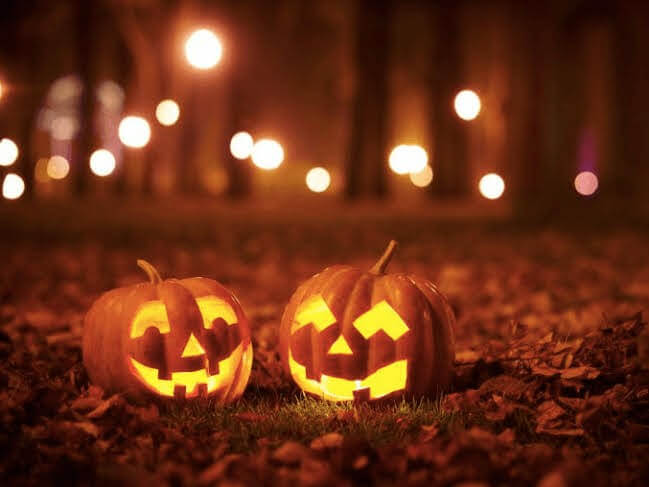

Sự Kiện Văn Hóa & Cộng Đồng Mới Nhất

🎭Ngày di sản văn hóa Việt Nam
📅 Thời gian:
Thứ Bảy, ngày 7 tháng 6 năm 2025, từ 11:00 sáng đến 3:00 chiều📍 Địa điểm:
Cherry Hill Farmhouse, 312 Park Avenue, Falls Church, VA.🎟️ Vé vào cửa:
Miễn phí, không cần đăng ký trước Xem bản đồ📝Nội dung nổi bật:
Hợp tác với Câu lạc bộ Văn học và Văn hóa Việt Nam (VLAC).Sự kiện mang đến trải nghiệm văn hóa Việt độc đáo thông
qua âm nhạc sống, các màn trình diễn múa, đồ cổ và ẩm thực truyền thống.
🏮 Lễ hội Trung Thu
📅 Thời gian:
Thứ Bảy, ngày 13 tháng 9 năm 2025, từ 12:00 sáng đến 5:00 chiều📍 Địa điểm:
The Eden Center: 6751-6799 Wilson Blvd, Falls Church, VA 2204 Xem bản đồ📝 Nội dung nổi bật:
Lễ hội bao gồm các buổi biểu diễn văn hóa trực tiếp, phátđèn lồng cho trẻ em, các hoạt động vui chơi cho mọi lứa tuổi và các cuộc thi.

🏮 Lễ hội Halloween
📅 Thời gian:
Thứ Bảy, ngày 25 tháng 10 năm 2025, từ 1:00 chiều đến 5:30 chiều📍 Địa điểm:
Công viên Cherry Hill (312 Park Ave, Falls Church, VA 22046) Xem bản đồ📝 Nội dung nổi bật:
Tham gia lễ hội Halloween tuyệt vời! Sự kiện này bao gồm các trò chơi hội chợ, cuộc thi hóa trang, các trò chơi bơm hơi, kẹo, đồ ăn nhẹ mùa thu và nhiều hơn nữa, tất cả đều diễn ra ngoài trời tại Công viên Cherry Hill! Xin vui lòng mang theo một túi để thu thập kẹo từ nhà. Khuyến khích mặc trang phục!
🎉 Tết Nguyên Đán
📅 Thời gian:
Ngày 17 tháng 2 năm 2026 từ 12:00 chiều - 5:00 chiều. (Ngày chính xác sẽ công bố sau)📍 Địa điểm:
The Eden Center: 6751-6799 Wilson Blvd, Falls Church, VA 2204Xem bản đồ
📝 Nội dung nổi bật:
Lễ hội Tết Nguyên Đán bao gồm các điệu múa lân truyền thống, bao lì xì và các hoạt động cây ước cho mọi lứa tuổi.Lễ hội nhằm chia sẻ hy vọng cho một năm mới được nhiều may mắn đến cộng đồng người Việt.